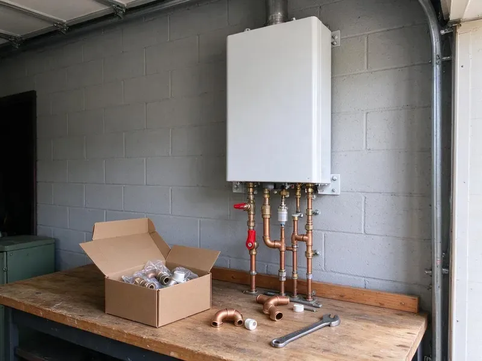

Water Softener Installation in Edina, MN
CNV Plumbing installs water softeners across Edina, MN, matched to your hardness and water use.
- Experienced Minnesota Plumbers
- Labor Warranty
- Licensed Plumbers
- Upfront Pricing
Need a Water Softener Installed in Edina, MN?
Call (612) 712-9569 to schedule a water test and softener install.
Softener and Filter Installs in Edina, MN
CNV Plumbing handles the whole job, from cutting into the main to programming the valve. We install a bypass valve, run the drain line to an air gap and set the regeneration schedule so the system does not waste salt or water. Your skin will notice first.
Work we handle every week:
- Salt-based softeners with Fleck and Clack valves
- Every major brand
- Work to local plumbing code

Additional Plumbing Installation Services in Edina, MN
We install water heaters, pumps, lines, and fixtures across Edina, MN with precision workmanship that meets every local code.


Customers
Why Choose CNV Plumbing for Water Softener Installation in Edina, MN?
Picking an installer who knows Minnesota water saves you money on salt and on service calls. Our quotes come after a water test, which means the system matches your hardness instead of a generic number. Right size wins.
- Proper Sizing, We size by grain capacity and daily use.
- Clean Installation, Quality fittings and a bypass valve make service easy.
- Energy Savings, Water heaters use less energy without scale on the bottom of the tank.
Citywide Coverage
From older homes without loops to new builds, our crews reach every corner of Edina. A new loop can be added anywhere.
Experienced Team
Our plumbers have installed many softener models in Minnesota homes. Simple installs and full filter-plus-softener setups are both familiar work.
Safety-First Approach
Local plumbing code is followed on every softener we install. Drain and electrical connections get checked every time.
Trusted Certified Edina Plumbing Services Professionals
At CNV Plumbing, we take pride in licensed, certified plumbing services throughout Edina, MN. Those papers on the wall mean something. Our plumbers hold recognized industry credentials, and they follow strict safety and quality rules on every repair, installation and maintenance call we run.
Call Us Now PHCC Plumbing Contractor Recognition
PHCC Plumbing Contractor Recognition Better Business Bureau (BBB) Accreditation
Better Business Bureau (BBB) Accreditation Angi Certified Pro
Angi Certified Pro ISO 9001 Quality Management Certification
ISO 9001 Quality Management CertificationWater Treatment Installs in Edina, MN
Culligan Water Softener Installation in Edina
Culligan systems are common in homes around here, and we install and connect them. Each install follows the brand's specs for drain, bypass and power, then we program it to your water test. We handle all of it. Existing loops make it faster.

Residential Water Softener Installation in Edina
Hard water costs homeowners money in shorter appliance life and extra cleaning. We test the water, ask about daily use and choose a capacity that lets the system regenerate roughly once a week. Weekly is the sweet spot. One visit covers the full install.
Reverse Osmosis Drinking Water Systems in Edina
Reverse osmosis pushes water through a fine membrane that removes most dissolved solids, including the sodium a softener adds. We install RO units under the kitchen sink with a dedicated faucet, and many can also feed a refrigerator water line or an ice maker. Pairs well with a softener. Filters get changed on schedule.
Salt-Free Water Conditioner Installation in Edina
Salt-free conditioners do not soften water, and we say so up front. They change the minerals into crystals that do not stick to pipe walls and heating elements, so scale drops off without adding sodium or using a drain line. Maintenance is light. They work best on moderate water.
Whole-House Water Softener Systems in Edina
On a whole-house system, the softener goes on the main line after the shutoff and before the water heater. Every whole-house install gets a bypass valve, and we add a pressure reducing valve if incoming pressure is too high. Soft water reaches every fixture. We can skip the hose bibs.
Fleck Water Softener Installation in Edina, MN
Fleck valves, especially the 5600SXT and 7000SXT, are on a lot of the softeners we install. They are simple to program, easy to rebuild and parts are stocked almost everywhere, which matters when a seal fails ten years in. Settings match your test. We confirm the setup before leaving.
Ecodyne Water Softener Installation in Edina
Ecodyne softeners are sold at many home stores, and we install them for homeowners who already bought one. We follow the Ecodyne manual for the bypass, drain and overflow connections, then program hardness and regeneration settings for your water. Bring your own unit. We set it up for you.

Water Softener Installation Cost in Edina, MN
Cost depends on the system type, its capacity and whether a loop already exists. Installing on an existing loop is faster and cheaper, while adding a new loop means cutting into the main and running pipe, which adds labor and fittings. Filters add cost. Your written quote lists equipment, labor and setup.
Water Softener Installation Near Me in Edina, MN
Need water softener installation near me? Local crews bring test kits and stocked systems, which keeps scheduling quick. Plan on a few hours.
We know the local water and what hardness does to pipes. You get a recommendation that fits your use, a clean install and clear advice on upkeep. Simple upkeep.
CNV Plumbing at a Glance
- Licensed and insured plumbers serving Edina, MN
- Same-day appointments and 24/7 emergency response
- Upfront, flat-rate pricing before work begins
- 4.8-star rated by 501+ Minnesota customers
Edina Map
Edina Information
- Population
- 53,348
- Area codes
- 952/763/612
- Service area
- Edina and communities within 40 miles
- Nearby
- St. Louis Park, Bloomington, Minnetonka, Eden Prairie
Calcium and magnesium coat the inside of pipes and appliances over time, so a softener cuts repair bills in Edina, MN homes.
Expert Services
Call CNV Plumbing for honest, reliable plumbing from people who know the trade in Edina, MN.
Our Specialized Plumbing Services in Edina, MN
At CNV Plumbing, you get every kind of plumbing service from one company across Edina, MN. From leak detection to full system installs, our team works fast and charges fair prices on homes and commercial properties alike. Here are the core services we offer:


How We Install a Water Softener in Edina, MN
From the first test to the final setup, CNV Plumbing keeps the install clean in Edina, MN.
Request a Quote
Reach CNV Plumbing at (612) 712-9569 or through our online form. We talk through your hard water problem and book a visit.
On-Site Assessment
A plumber visits your Edina home, tests hardness, checks the plumbing and goes over options. You get a clear estimate.
Installation
Once you approve, we install the system, set up drainage and run a test.
Frequently Asked Questions About Water Softener Installation in Edina
Most Edina, MN softener installs land between $1,500 and $4,000. That typically covers the unit itself and the labor to plumb it in, program it and test it, with any loop or drain work listed separately. Capacity affects price. We give written pricing up front.
Half a day covers most residential installs, usually three to six hours. Existing plumbing, a loop or no loop and the type of system all affect the time. Loops speed it up.
Control valves usually carry about 5 years, and tanks often 10 or more. We also warranty our installation work.
A softener targets calcium and magnesium to stop scale. A filter removes things like chlorine and sediment to improve taste and safety, and plenty of homes use both together.
Less scale in pipes and appliances is the big one. Appliances last longer, you use less soap and detergent, skin and hair feel better and cleaning shower glass gets a lot easier. Clothes come out softer.
Salt-based softeners add a small amount of sodium. Plenty of homeowners add an RO system at the kitchen sink for drinking and cooking.
Most homeowners are better off hiring a pro. A wrong connection can leak for weeks or leave the water just as hard as before. Professional work gets sizing, connections and code right.
Some areas require a plumbing permit for this kind of work. CNV Plumbing advises on permits in Edina and can help with the application.
What Our Customers Say About Our Plumbing Experts

Brian W.
I smelled gas behind the dryer and called right away. The plumber found a corroded flex connector, replaced it, and pressure tested the whole line before turning the gas back on. He let me watch the gauge hold steady for fifteen minutes.
Gas Line Repair · Minneapolis, MN
Angela D.
Our sump pump quit during a storm and the water was an inch from the basement carpet. CNV Plumbing put in a new pump with a battery backup that same evening. We have had two heavy rains since. It kicked on both times.
Sump Pump · Bloomington, MN
Carlos V.
Our house still had galvanized pipe, and upstairs the shower was a trickle. The crew repiped everything in PEX over three days and patched every drywall hole before they left. The pressure difference is night and day.
Repiping · Eden Prairie, MNMark T.
The floor drain in our office break room backed up every few weeks. The plumber ran a cable, then put a camera down and found roots at a joint about thirty feet out. Seeing it on the screen made the decision easy.
Drain Cleaning · Minneapolis, MNNathan E.
Our tankless heater kept throwing an error code and shutting off mid shower. The tech flushed the heat exchanger, which was full of scale, and replaced a bad flow sensor. Hot water has been steady for half a year now.
Water Heater Repair · Minnetonka, MNDiane F.
My kitchen faucet had dripped for months and I finally got tired of hearing it at night. CNV Plumbing came out the next morning, replaced the cartridge and the O rings, and tightened a loose base that was letting water under the sink.
Faucet Repair · Eden Prairie, MN